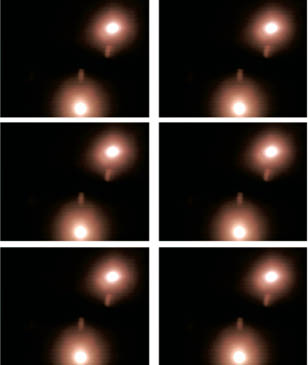
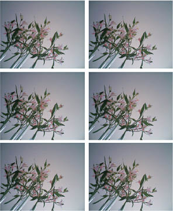
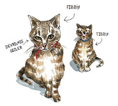
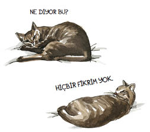
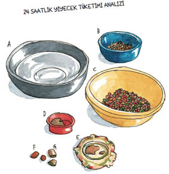
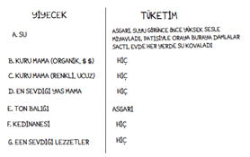
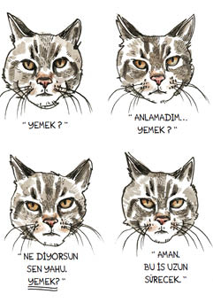

8
Kameranın zaman aralığını yeniden programlamaya karar verdik. Makine yine yüz fotoğraf çekecekti, ama bu defa beşer dakika arayla yapacaktı bunu. Böylece Tibby’nin gününün sekiz buçuk saatini kayıt etmiş olacaktık. O zaman gizli hayatından görüntüleri mutlaka yakalardık.
“Kameranın zamanını yeniden programlamaya karar verdik,” derken, aslında “talimatları anlamak için debelendik ve pozlar arasındaki süreyi uzattığımızı umuyoruz” demek istiyorum. Makine, o kadar küçük ve sade görünüşlü bir şey için aşırı karışıktı. “Karışıktı” derken de “bizim gibi teknolojiden anlamayan saftiriklere dünyanın kaç bucak olduğunu gösterdi” demek istiyorum.
Üreticiyle temasa geçtim. Adam Alman’dı, bu cihazları kendisi elle üretiyordu ve yardım etmeye de istekliydi. Ama dil engeli benim yetersizliğimle birleşince, çok çaba harcadıysak da az bir mesafe kaydedebildik. Nihayet Wendy ile ben, bu umutsuzluk ve umut kavşağında çoğu insanın yapacağını yaptık. Salladık.
Yeni fotoğrafları, mal almış bir uyuşturucu müptelasının hevesiyle indirdim bilgisayara. Ama işte size onlardan birkaç örnek:

Evet, fotoğrafların yarısı tavandaki lambaları gösteriyordu. Bizim tavanımızdaki lambaları.
Geri kalanların da farkı yoktu:

Bunu takip eden denemeler de iç açıcı değildi. Bir defasında çerçeveli bir resmin kesintisiz kaydı vardı. Resim, kanepede uzanan birinin göz hizasında asılıydı. Fotoğraflara bakarken bir kediciğin horlamalarını duyar gibi oluyordum. Onların ardından merdivenimizin çarpık bir görüntüsü belirince umutlarım arttı. Tibby hareket halindeydi. Ama bir dizi sanatsal fotoğrafla daha karşılaşınca bu umutlar yerle bir oldu: Üst üste yeşil bulanıklıklar. Misafir odasındaki yeşil döşemeli keyif koltuğunda yatan bir kameranın vizöründen görünenlerdi bunlar.
Wendy bütün fotoğrafları gözlerini kısarak inceledi, başını salladı ve sonunda değerli bilgiler elde etmiş olduğumuzu vurguladı.
“Ne bilgisi?” diye somurttum.
“Tibby çok uyuyor.”
O esnada, Fibby de bizi meşum bakışlarla seyrediyordu. Tibby’nin üstüne titreniyordu. Bu durum ona ayrılan insan-ilgisi-süresini azaltmamıştı, ama Fibby olanlardan yine de hoşlanmamıştı.

Fibby’yi seviyordum ama onun ne mal olduğunu da biliyordum. Ortaokulda şişman çocuklarla sivilceli oğlanları dışlayan, yüksek sesle insanların dedikodusunu yapan, bacak desteği takan ve belli olmayan bir hastalıktan mustarip olan çocuğa pis pis sırıtan, kötü dedikodular yayan, diğerlerine de aynısını yapmaları talimatını veren, öğle yemeği paralarını çalan, annesiyle babasının işi hakkında yalan söyleyen ve bütün bunlara rağmen bütün sınıf arkadaşlarınca sevilen ve imrenilen büyüleyici, akıllı, ilgi bekleyen kız çocuğuydu.
Tibby ise şişe dibi gözlüklü, kitapları her gün çamurlara yuvarlanan çocuktu. Fibby onunla arkadaşlık edecek değildi. Acaba birbirlerini hiç ikizlerin birbirlerini sevmesi gerektiği gibi sevmişler miydi? Anlamak zordu.
Ama.
Oturma odasına girip ikisini birden kanepenin üstünde yakaladığım olmuştu. Geldiğimi duyunca, başlarını aynı anda bana çevirir ve birbirinin tıpkısı ifadelerle bakarlardı. Yanı başlarında martini kadehleri, briç masasında toplanmış yetişkinlerin, küçük bir çocuğun aniden ortaya çıkıp gözlerini ovalayarak kabus gördüğünü, uyuyamadığını, bir şeyler yemek istediğini söylemesi üzerine sokağın aşağısındaki sürtük hakkındaki dedikodularına ara vermeleri gibi. Neşe, ketumluk, komplocu bir kendini beğenmişlik, bu duyguların hepsi kedilerimin yüzünde belirir gibi olurdu. Etrafımdaki kedicik dünyasını doğru olarak okuyamadığım ve en azından nazik bir şekilde katakulliye getirildiğim duygusu tarafından ele geçirilmiş olarak zınk diye dururdum. Ama bir saniye sonra, Fibby ayaklanır, gerinir ve beni karşılamaya koşardı. Tibby’ye uyarı dolu bir bakış atardı, Tibby de itirazlarıma rağmen tabanları yağlardı. Sonra Fibby kucağıma tırmanır, şişko gövdesini virgül şeklinde büker ve sevgiyle bana bakardı. İki kulağını da periskop gibi öne doğru uzatır, başını yana eğer, ve sonunda gözkapaklarını pencereden aşağı düşen mendiller gibi kapatır ve böylece kalleş planını tamamlamış olurdu. Fibby o anda bütün şüphelerimi ustalıkla eritir, geriye yalnızca yüreğimin pembe, kıpır kıpır kütlesini ve yüzümde büyülenmiş, budalaca, kedi delisi bakışlar bırakırdı.

Birkaç defa daha dijital fotoğraf indirdikten ve üreticiyle birkaç defa daha e-postayla yazıştıktan sonra, nihayet hatamı kabullenerek pes ettim. Kamerayı Tibby’nin boynundan çıkardım. Cihaz bize herhangi bir cevap sunmuyordu. Yine de soru olduğu gibi duruyordu: Tibby yemek yemek için nereye gidiyordu?
Tibby hiçbir zaman hayatı yemek etrafında dönen bir hayvan olmamıştı. Ama burası San Francisco’ydu, durmadan yiyecek züppeleri türerdi. Ucuz Meksika dürümlerine birdenbire dudak bükülür; tabağınızdaki çırpılan, doğranan, alevle yakılan ya da Dali benzeri bir çalışmayla anıt şeklinde üst üste yığılan acayip lezzetler göklere çıkarılırdı. Belki Tibby de böyle bir şey yaşamış, dolaşmaya çıktığı sırada içindeki gurmeyle karşılaşmıştı.
Böylece kilo kontrolü sağlayan, tüyleri parlatan, dişleri beyazlatan, kuyruğu düzleştiren mamayı ortadan kaldırdım. Pırıl pırıl, temiz bir kaseyi tombul karidesler, alev alev turuncu havuçlar ve çarpıcı aromalarla dolu kaşık kaşık yepyeni mamayla doldurdum. Sonra ışıkları kıstım, yumuşak bir müzik koydum ve akşam yemeğinin hazır olduğunu cıvıldayarak ilan ettim. Hayır, Tibby’nin kimi ziyaret ettiğini bilmiyordum ama o sarışın bombanın hakkından gelmeye kararlıydım, hem de onun yöntemleriyle.


Tibby burun kıvırdı.
Sorun değil. Başka bir konserve açtım. Kendi suyunda pişmiş bembeyaz ördek eti, parlak mor patlıcan. Bir kez daha cıvıldadım ama Tibby yine dudak büktü. Yine. Ve yine.
Her reddedilişte, “Hiç sorun değil,” diye şakıyordum. “Başka bir lezzet geliyor !”
Günlerce devam ettim buna. Kaseyi temizliyor ve başka bir şeyle dolduruyordum. Sonunda yanaklarım gülümsemekten uyuştu, sesim sahte neşeden kısıldı ve mutfak önlüğüm eskidi. Nihayet mağlubiyeti kabul ettim; kase yeniden kiloyu kontrol altında tutan, tüyleri parlatan, dişleri beyazlatan, kulakları dikleştirip kuyruğu düzleştiren mamayla dolduruldu.
GPS de yeniden kullanıma girdi. Yeni bir takip tekniği bulana kadar elimizde yalnızca o vardı. Ama son harita da bütün mahalleye yayılmış, şifresi çözülemez bir çizgi yumağı halindeydi. Tıkanıp kalmıştım. Kamera işe yaramıyor, herhangi bir ipucu vermiyordu. GPS’ten gelen bilgiler de anlaşılmazdı.
“Çok fazla bilgi var ama anlamanın yolu yok,” diye sızlandım Wendy’ye. “Ulusal Güvenlik gibiyiz.”
Wendy, “Bir adım ilerledik,” dedi.
“Ne!?” diye bağırdım.
“Moralin düzelmişe benziyor.”
Doğruydu. İyileşiyordum. Bileğim kağnı hızıyla iyileşiyor olabilirdi, ama gözümde bir ışıltı, yüreğimde bir amaç vardı. Evet, ışıltı manyakça, amaç da saplantılıydı, ama yine de ağır ağır –kesinlikle- yaşama dönüyordum.
Böyle bir ruh halindeydim, ben de etkili bir şey yapmam gerektiğine karar verdim.
Kedice konuşmayı öğrenmenin vakti gelmişti.
